CODING AGENTS AS PIXEL WORLD MODELS
traex/DeepSeek-V4.1-Flash · phygen_059
点击播放 · 原生 RGB 像素
逐轮保存的候选
回放视频、检查图与代码变化。
每份候选均可单独播放。实际图片检查记录在下方工具轨迹中。
候选 01播放与检查图
点击播放 · 原生 RGB 像素

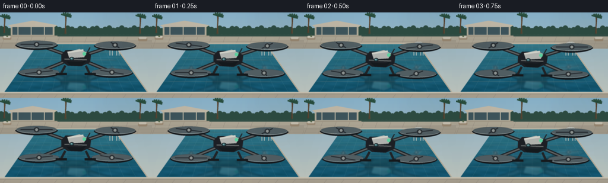
展开代码变化
--- 上一保存版本
+++ 本次保存版本
@@ -0,0 +1,388 @@
+from pathlib import Path
+import math
+
+import numpy as np
+from PIL import Image, ImageDraw, ImageFilter
+
+import artifact_io
+
+
+CASE_DIR = Path(__file__).resolve().parent
+WIDTH = 256
+HEIGHT = 144
+FRAMES = 20
+FPS = 4.0
+SCALE = 4
+W = WIDTH * SCALE
+H = HEIGHT * SCALE
+DRONE_SCALE = 2.35
+
+
+def lerp(a, b, t):
+ return a + (b - a) * t
+
+
+def mix(c1, c2, t):
+ return tuple(int(round(lerp(a, b, t))) for a, b in zip(c1, c2))
+
+
+def rgba(color, alpha=255):
+ return (*color, alpha)
+
+
+def vertical_gradient(size, top, bottom):
+ width, height = size
+ y = np.linspace(0.0, 1.0, height, dtype=np.float32)[:, None]
+ y = np.repeat(y, width, axis=1)
+ top_arr = np.array(top, dtype=np.float32)
+ bottom_arr = np.array(bottom, dtype=np.float32)
+ arr = top_arr[None, None, :] * (1.0 - y[:, :, None]) + bottom_arr[None, None, :] * y[:, :, None]
+ return Image.fromarray(np.clip(arr, 0, 255).astype(np.uint8), "RGB")
+
+
+def rounded_rect(draw, box, radius, fill=None, outline=None, width=1):
+ draw.rounded_rectangle(box, radius=radius, fill=fill, outline=outline, width=width)
+
+
+def draw_background(im, draw):
+ sky = vertical_gradient((W, H), (158, 205, 229), (225, 230, 217))
+ im.paste(sky, (0, 0))
+
+ # A low sun creates a soft, warm edge in the sky without competing with the drone.
+ glow = Image.new("RGBA", (W, H), (0, 0, 0, 0))
+ gd = ImageDraw.Draw(glow)
+ gd.ellipse((720, 12, 920, 212), fill=(255, 240, 194, 24))
+ gd.ellipse((770, 50, 880, 160), fill=(255, 246, 214, 42))
+ glow = glow.filter(ImageFilter.GaussianBlur(24 * SCALE))
+ im.alpha_composite(glow)
+
+ # Distant palms and hedge silhouette.
+ draw = ImageDraw.Draw(im)
+ draw.rectangle((0, 128, W, 202), fill=(60, 91, 78))
+ for x in range(-20, W + 30, 28):
+ h = 26 + int(10 * math.sin(x * 0.071))
+ draw.ellipse((x - 22, 122 - h, x + 22, 150), fill=(54, 88, 74))
+
+ # A clean modern pool house, mostly obscured by greenery.
+ draw.rectangle((72, 82, 366, 162), fill=(205, 196, 172))
+ draw.rectangle((84, 93, 354, 150), fill=(73, 99, 104))
+ draw.rectangle((84, 93, 354, 96), fill=(235, 229, 207))
+ for x in (118, 207, 296):
+ draw.rectangle((x, 97, x + 5, 150), fill=(224, 215, 190))
+ draw.polygon([(54, 86), (220, 55), (386, 86), (366, 98), (72, 98)], fill=(224, 214, 190))
+ draw.rectangle((50, 156, 386, 168), fill=(183, 171, 146))
+
+ # Far hedge and a couple of palm crowns.
+ for x, base, height in ((26, 139, 105), (438, 143, 120), (940, 142, 112)):
+ trunk = (92, 74, 54)
+ draw.line((x, base, x + 8, base - height), fill=trunk, width=8)
+ draw.line((x + 7, base, x + 2, base - height), fill=(115, 89, 59), width=4)
+ top_x, top_y = x + 7, base - height
+ for angle in (-2.65, -2.15, -1.65, -1.15, -0.65, -0.15, 0.35):
+ ex = top_x + int(38 * math.cos(angle))
+ ey = top_y + int(24 * math.sin(angle))
+ draw.line((top_x, top_y, ex, ey), fill=(42, 82, 65), width=10)
+ draw.line((top_x, top_y, ex, ey), fill=(60, 105, 77), width=4)
+
+ # Pale stone deck, with restrained paving joints.
+ draw.rectangle((0, 162, W, 244), fill=(201, 191, 168))
+ draw.polygon([(0, 203), (W, 186), (W, 244), (0, 244)], fill=(188, 179, 157))
+ for x in range(-60, W + 100, 92):
+ draw.line((x, 164, x - 30, 244), fill=(166, 157, 139), width=2)
+ for y in (184, 209, 234):
+ draw.line((0, y, W, y + 2), fill=(167, 158, 140), width=2)
+
+ # A few quiet deck details add scale.
+ rounded_rect(draw, (18, 164, 76, 183), 7, fill=(180, 160, 132))
+ rounded_rect(draw, (22, 158, 70, 172), 6, fill=(233, 225, 203))
+ draw.ellipse((42, 153, 54, 165), fill=(104, 122, 84))
+ rounded_rect(draw, (930, 171, 992, 193), 8, fill=(176, 156, 128))
+ rounded_rect(draw, (935, 164, 987, 179), 7, fill=(229, 220, 198))
+
+ return im
+
+
+def pool_point(u, v):
+ """Map pool coordinates u in [-1,1], v in [0,1] to the image."""
+ # v=0 is the far edge, v=1 is the near edge.
+ y = lerp(208, 576, v ** 1.43)
+ half = lerp(252, 510, v ** 0.82)
+ return W / 2 + u * half, y
+
+
+def pool_polygon(inset=0):
+ far_y = 208 + inset
+ near_y = 576 - inset
+ far_half = 252 - inset
+ near_half = 510 - inset
+ return [
+ (W / 2 - far_half, far_y),
+ (W / 2 + far_half, far_y),
+ (W / 2 + near_half, near_y),
+ (W / 2 - near_half, near_y),
+ ]
+
+
+def draw_pool(im, draw, t):
+ water = vertical_gradient((W, H), (80, 163, 173), (17, 91, 119))
+ water_arr = np.asarray(water).astype(np.float32)
+
+ yy, xx = np.mgrid[0:H, 0:W]
+ vv = np.clip((yy - 208) / (576 - 208), 0, 1)
+ uu = (xx - W / 2) / np.maximum(lerp(252, 510, vv ** 0.82), 1)
+ wave = (
+ 0.65 * np.sin(vv * 35.0 + uu * 9.0 + t * 1.3)
+ + 0.35 * np.sin(vv * 72.0 - uu * 16.0 - t * 0.7)
+ + 0.18 * np.cos(uu * 28.0 + t * 0.4)
+ )
+ light = 10.0 * wave * (0.25 + 0.75 * vv)
+ water_arr[:, :, 0] += light * 0.45
+ water_arr[:, :, 1] += light * 0.75
+ water_arr[:, :, 2] += light
+ water = Image.fromarray(np.clip(water_arr, 0, 255).astype(np.uint8), "RGB").convert("RGBA")
+
+ water_mask = Image.new("L", (W, H), 0)
+ ImageDraw.Draw(water_mask).polygon(pool_polygon(), fill=255)
+ im.paste(water, (0, 0), water_mask)
+ draw = ImageDraw.Draw(im)
+
+ # Pool coping.
+ draw.line(pool_polygon(), fill=(227, 218, 196), width=10, joint="curve")
+ draw.line(pool_polygon(), fill=(178, 169, 150), width=2, joint="curve")
+
+ # Perspective tile grid under the water.
+ tile = Image.new("RGBA", (W, H), (0, 0, 0, 0))
+ td = ImageDraw.Draw(tile)
+ for u in np.linspace(-1, 1, 13):
+ p0 = pool_point(u, 0.02)
+ p1 = pool_point(u, 0.99)
+ td.line((p0, p1), fill=(178, 231, 225, 38), width=2)
+ for v in (0.09, 0.18, 0.28, 0.39, 0.51, 0.64, 0.78, 0.92):
+ y = lerp(208, 576, v ** 1.43)
+ half = lerp(252, 510, v ** 0.82)
+ td.line((W / 2 - half, y, W / 2 + half, y), fill=(193, 240, 232, 36), width=2)
+ im.alpha_composite(Image.composite(tile, Image.new("RGBA", (W, H)), water_mask))
+ draw = ImageDraw.Draw(im)
+
+ # Thin, glassy surface highlights.
+ for index, v in enumerate((0.14, 0.27, 0.43, 0.61, 0.78)):
+ y = lerp(208, 576, v ** 1.43)
+ half = lerp(252, 510, v ** 0.82)
+ shift = math.sin(t * 0.55 + index) * 13
+ draw.line(
+ (W / 2 - half * 0.84 + shift, y, W / 2 + half * 0.63 + shift, y + 1),
+ fill=(195, 237, 228, 45),
+ width=2,
+ )
+ draw.line(
+ (W / 2 - half * 0.35 - shift, y + 5, W / 2 + half * 0.74 - shift, y + 5),
+ fill=(225, 249, 238, 25),
+ width=1,
+ )
+
+ # Ladder rails on the far-right edge.
+ for offset in (0, 16):
+ x = 736 + offset
+ draw.arc((x, 198, x + 56, 252), 188, 348, fill=(215, 219, 211), width=5)
+ draw.line((x + 4, 225, x + 4, 290), fill=(221, 225, 215), width=5)
+ draw.line((x + 50, 225, x + 50, 290), fill=(221, 225, 215), width=5)
+
+
+def drone_polygons(cx, cy, bob, tilt):
+ """Return the main drone geometry and rotor positions."""
+ cy += bob
+ cos_t = math.cos(tilt)
+ sin_t = math.sin(tilt)
+
+ def p(x, y):
+ dx, dy = x * DRONE_SCALE, y * DRONE_SCALE
+ return cx + dx * cos_t - dy * sin_t, cy + dx * sin_t + dy * cos_t
+
+ body = [
+ p(-42, -7), p(-30, -20), p(20, -20), p(43, -8),
+ p(40, 15), p(15, 26), p(-24, 24), p(-42, 11),
+ ]
+ canopy = [p(-25, -15), p(10, -24), p(31, -14), p(23, 0), p(-19, 3)]
+ belly = [p(-28, 12), p(13, 14), p(31, 8), p(17, 24), p(-16, 24)]
+ arm_color = (60, 64, 66)
+ arms = [
+ (p(-28, -7), p(-113, -37)),
+ (p(27, -7), p(112, -35)),
+ (p(-26, 10), p(-106, 43)),
+ (p(26, 11), p(103, 43)),
+ ]
+ rotors = [arms[0][1], arms[1][1], arms[2][1], arms[3][1]]
+ return p, body, canopy, belly, arms, rotors, arm_color
+
+
+def draw_rotor(draw, x, y, phase, scale=1.0, alpha=255, reflection=False):
+ rx = int(58 * scale)
+ ry = int(11 * scale)
+ if reflection:
+ rx = int(rx * 0.86)
+ ry = int(ry * 0.82)
+
+ # Motion-blurred prop disk.
+ draw.ellipse((x - rx, y - ry, x + rx, y + ry), fill=(204, 220, 218, 32 if not reflection else 20))
+ draw.arc((x - rx, y - ry, x + rx, y + ry), 8, 172, fill=(232, 241, 235, alpha), width=2)
+ draw.arc((x - rx, y - ry, x + rx, y + ry), 188, 352, fill=(85, 99, 99, 150 if not reflection else 95), width=2)
+
+ # Two visible blades rotating as a subtle strobe.
+ angle = phase
+ for blade in (0.0, math.pi):
+ a = angle + blade
+ x1 = x - int(math.cos(a) * rx * 0.80)
+ y1 = y - int(math.sin(a) * ry * 0.80)
+ x2 = x + int(math.cos(a) * rx * 0.80)
+ y2 = y + int(math.sin(a) * ry * 0.80)
+ draw.line((x1, y1, x2, y2), fill=(45, 51, 53, alpha), width=max(2, int(3 * scale)))
+ draw.ellipse((x - 8 * scale, y - 7 * scale, x + 8 * scale, y + 7 * scale), fill=(49, 54, 56, alpha))
+ draw.ellipse((x - 4 * scale, y - 4 * scale, x + 4 * scale, y + 4 * scale), fill=(166, 172, 166, alpha))
+
+
+def draw_drone(im, draw, cx, cy, bob, tilt, t):
+ p, body, canopy, belly, arms, rotors, arm_color = drone_polygons(cx, cy, bob, tilt)
+
+ # Soft shadow of the aircraft on the water.
+ shadow = Image.new("RGBA", (W, H), (0, 0, 0, 0))
+ sd = ImageDraw.Draw(shadow)
+ sy = 401 + bob * 0.75
+ sd.ellipse((cx - 126, sy - 29, cx + 126, sy + 27), fill=(6, 49, 62, 40))
+ sd.ellipse((cx - 75, sy - 18, cx + 75, sy + 17), fill=(4, 40, 53, 40))
+ shadow = shadow.filter(ImageFilter.GaussianBlur(12 * SCALE))
+ im.alpha_composite(shadow)
+ draw = ImageDraw.Draw(im)
+
+ # Arms first so the body sits cleanly over them.
+ for start, end in arms:
+ draw.line((start, end), fill=(32, 36, 38), width=6 * SCALE)
+ draw.line((start, end), fill=(83, 87, 86), width=3 * SCALE)
+ draw.line((start, end), fill=(129, 132, 126), width=1 * SCALE)
+
+ # Rotor guards and motors.
+ for index, (rx, ry) in enumerate(rotors):
+ guard_r = 62 * DRONE_SCALE
+ draw.arc(
+ (rx - guard_r, ry - 16 * DRONE_SCALE, rx + guard_r, ry + 16 * DRONE_SCALE),
+ 8, 172, fill=(27, 31, 33), width=3 * SCALE,
+ )
+ draw.line((rx - 12 * DRONE_SCALE, ry, rx + 12 * DRONE_SCALE, ry), fill=(28, 32, 34), width=4 * SCALE)
+ draw_rotor(draw, rx, ry, t * 2.5 + index * 1.3, DRONE_SCALE)
+
+ # Landing skids, visible below the belly.
+ draw.line((p(-31, 24), p(-43, 47)), fill=(40, 43, 44), width=4 * SCALE)
+ draw.line((p(28, 24), p(39, 47)), fill=(40, 43, 44), width=4 * SCALE)
+ draw.line((p(-58, 48), p(-26, 48)), fill=(28, 31, 32), width=4 * SCALE)
+ draw.line((p(25, 48), p(57, 48)), fill=(28, 31, 32), width=4 * SCALE)
+
+ # Body shell with a pale top and charcoal underside.
+ draw.polygon(body, fill=(35, 39, 41))
+ draw.polygon(belly, fill=(27, 31, 33))
+ draw.polygon(canopy, fill=(204, 207, 198))
+ draw.line((p(-24, -14), p(21, -21)), fill=(242, 242, 228), width=3 * SCALE)
+ draw.line((p(-33, 5), p(31, 7)), fill=(119, 124, 121), width=2 * SCALE)
+ draw.ellipse((p(-19, -1)[0], p(-19, -1)[1], p(-5, 9)[0], p(-5, 9)[1]), fill=(34, 44, 46))
+ draw.ellipse((p(-17, 1)[0], p(-17, 1)[1], p(-8, 7)[0], p(-8, 7)[1]), fill=(63, 112, 118))
+ draw.ellipse((p(-15, 2)[0], p(-15, 2)[1], p(-11, 5)[0], p(-11, 5)[1]), fill=(154, 212, 207))
+
+ # Tiny status lamp and antenna.
+ lamp = p(24, -10)
+ draw.ellipse((lamp[0] - 3 * SCALE, lamp[1] - 3 * SCALE, lamp[0] + 3 * SCALE, lamp[1] + 3 * SCALE), fill=(109, 241, 181))
+ draw.line((p(30, -10), p(40, -28)), fill=(42, 47, 48), width=2 * SCALE)
+
+
+def draw_reflection(im, t, cx, cy, bob, tilt):
+ # Build the drone once, mirror it, and distort it through the water.
+ layer = Image.new("RGBA", (W, H), (0, 0, 0, 0))
+ ld = ImageDraw.Draw(layer)
+ p, body, canopy, belly, arms, rotors, arm_color = drone_polygons(cx, cy, bob, tilt)
+
+ mirror_axis = 392
+ def mirror(point):
+ return point[0], 2 * mirror_axis - point[1]
+
+ # Reflected arms and rotors.
+ for start, end in arms:
+ ld.line((mirror(start), mirror(end)), fill=(29, 51, 57, 190), width=10 * SCALE)
+ ld.line((mirror(start), mirror(end)), fill=(77, 108, 110, 155), width=4 * SCALE)
+ for index, (rx, ry) in enumerate(rotors):
+ mr = mirror((rx, ry))
+ draw_rotor(ld, mr[0], mr[1], t * 2.5 + index * 1.3, DRONE_SCALE * 0.88, alpha=155, reflection=True)
+ ld.polygon([mirror(point) for point in body], fill=(27, 55, 61, 190))
+ ld.polygon([mirror(point) for point in belly], fill=(36, 77, 81, 160))
+ ld.polygon([mirror(point) for point in canopy], fill=(176, 211, 203, 135))
+ lamp = mirror(p(24, -10))
+ ld.ellipse((lamp[0] - 3 * SCALE, lamp[1] - 3 * SCALE, lamp[0] + 3 * SCALE, lamp[1] + 3 * SCALE), fill=(104, 236, 187, 120))
+
+ # Reflection fades with depth and breaks into narrow, gently shifting ripple bands.
+ arr = np.array(layer)
+ alpha = arr[:, :, 3].astype(np.float32)
+ yy, xx = np.mgrid[0:H, 0:W]
+ band_phase = np.sin(yy * 0.095 + t * 2.1) * 3.0 + np.sin(xx * 0.032 - t * 0.9) * 1.8
+ src_x = np.clip(xx + band_phase.astype(np.int32), 0, W - 1)
+ src_y = np.clip(yy + (1.5 * np.sin(xx * 0.044 + t * 1.4)).astype(np.int32), 0, H - 1)
+ alpha = alpha[src_y, src_x]
+ fade = np.clip(1.0 - (yy - mirror_axis) / 235.0, 0.12, 1.0)
+ arr[:, :, 3] = np.clip(alpha * fade * 0.72, 0, 255).astype(np.uint8)
+ distorted = Image.fromarray(arr, "RGBA").filter(ImageFilter.GaussianBlur(1.3 * SCALE))
+
+ water_mask = Image.new("L", (W, H), 0)
+ ImageDraw.Draw(water_mask).polygon(pool_polygon(10), fill=255)
+ im.alpha_composite(Image.composite(distorted, Image.new("RGBA", (W, H)), water_mask))
+
+
+def draw_foreground(im, draw):
+ # Near coping catches the warm sky and frames the water.
+ draw.polygon([(0, 540), (W, 540), (W, H), (0, H)], fill=(194, 184, 162))
+ draw.line((0, 540, W, 540), fill=(234, 225, 203), width=9)
+ draw.line((0, 550, W, 550), fill=(159, 151, 134), width=2)
+ for x in range(36, W, 116):
+ draw.line((x, 553, x - 18, H), fill=(171, 162, 143), width=2)
+
+ # Subtle vignette focuses attention on the hovering aircraft.
+ vignette = Image.new("L", (W, H), 0)
+ vd = ImageDraw.Draw(vignette)
+ vd.ellipse((-90, -70, W + 90, H + 100), fill=170)
+ vignette = vignette.filter(ImageFilter.GaussianBlur(90 * SCALE))
+ dark = Image.new("RGBA", (W, H), (5, 17, 22, 255))
+ dark.putalpha(Image.eval(vignette, lambda v: int((255 - v) * 0.38)))
+ im.alpha_composite(dark)
+
+
+def render_frame(index):
+ t = index / FPS
+ im = Image.new("RGBA", (W, H), (0, 0, 0, 255))
+ draw = ImageDraw.Draw(im)
+ im = draw_background(im, draw)
+ draw = ImageDraw.Draw(im)
+ draw_pool(im, draw, t)
+
+ bob = 3.3 * math.sin(t * 1.35 + 0.2) * SCALE
+ tilt = 0.018 * math.sin(t * 1.05)
+ cx = W / 2 + 2.5 * math.sin(t * 0.55) * SCALE
+ cy = 300
+
+ draw_reflection(im, t, cx, cy, bob, tilt)
+ draw = ImageDraw.Draw(im)
+ draw_drone(im, draw, cx, cy, bob, tilt, t)
+ draw_foreground(im, draw)
+
+ # A restrained photographic finish.
+ im = im.convert("RGB")
+ im = im.filter(ImageFilter.GaussianBlur(0.42 * SCALE))
+ im = im.resize((WIDTH, HEIGHT), Image.Resampling.LANCZOS)
+ arr = np.asarray(im).astype(np.float32)
+ arr = (arr - 128.0) * 1.035 + 128.0
+ arr[:, :, 0] += 1.5
+ arr[:, :, 2] += 2.0
+ return np.clip(arr, 0, 255).astype(np.uint8)
+
+
+def main():
+ frames = np.stack([render_frame(index) for index in range(FRAMES)])
+ artifact_io.save(frames, CASE_DIR)
+ print(f"wrote {FRAMES} frames to {CASE_DIR}")
+
+
+if __name__ == "__main__":
+ main()
候选 02播放与检查图
点击播放 · 原生 RGB 像素

展开代码变化
--- 上一保存版本
+++ 本次保存版本
@@ -124,7 +124,7 @@
def draw_pool(im, draw, t):
- water = vertical_gradient((W, H), (80, 163, 173), (17, 91, 119))
+ water = vertical_gradient((W, H), (91, 178, 184), (31, 120, 142))
water_arr = np.asarray(water).astype(np.float32)
yy, xx = np.mgrid[0:H, 0:W]
@@ -156,11 +156,11 @@
for u in np.linspace(-1, 1, 13):
p0 = pool_point(u, 0.02)
p1 = pool_point(u, 0.99)
- td.line((p0, p1), fill=(178, 231, 225, 38), width=2)
+ td.line((p0, p1), fill=(185, 235, 226, 25), width=2)
for v in (0.09, 0.18, 0.28, 0.39, 0.51, 0.64, 0.78, 0.92):
y = lerp(208, 576, v ** 1.43)
half = lerp(252, 510, v ** 0.82)
- td.line((W / 2 - half, y, W / 2 + half, y), fill=(193, 240, 232, 36), width=2)
+ td.line((W / 2 - half, y, W / 2 + half, y), fill=(193, 240, 232, 24), width=2)
im.alpha_composite(Image.composite(tile, Image.new("RGBA", (W, H)), water_mask))
draw = ImageDraw.Draw(im)
@@ -171,7 +171,7 @@
shift = math.sin(t * 0.55 + index) * 13
draw.line(
(W / 2 - half * 0.84 + shift, y, W / 2 + half * 0.63 + shift, y + 1),
- fill=(195, 237, 228, 45),
+ fill=(213, 244, 233, 62),
width=2,
)
draw.line(
@@ -297,14 +297,14 @@
ld = ImageDraw.Draw(layer)
p, body, canopy, belly, arms, rotors, arm_color = drone_polygons(cx, cy, bob, tilt)
- mirror_axis = 392
+ mirror_axis = 350
def mirror(point):
return point[0], 2 * mirror_axis - point[1]
# Reflected arms and rotors.
for start, end in arms:
- ld.line((mirror(start), mirror(end)), fill=(29, 51, 57, 190), width=10 * SCALE)
- ld.line((mirror(start), mirror(end)), fill=(77, 108, 110, 155), width=4 * SCALE)
+ ld.line((mirror(start), mirror(end)), fill=(24, 58, 65, 215), width=6 * SCALE)
+ ld.line((mirror(start), mirror(end)), fill=(77, 116, 117, 175), width=3 * SCALE)
for index, (rx, ry) in enumerate(rotors):
mr = mirror((rx, ry))
draw_rotor(ld, mr[0], mr[1], t * 2.5 + index * 1.3, DRONE_SCALE * 0.88, alpha=155, reflection=True)
@@ -323,7 +323,7 @@
src_y = np.clip(yy + (1.5 * np.sin(xx * 0.044 + t * 1.4)).astype(np.int32), 0, H - 1)
alpha = alpha[src_y, src_x]
fade = np.clip(1.0 - (yy - mirror_axis) / 235.0, 0.12, 1.0)
- arr[:, :, 3] = np.clip(alpha * fade * 0.72, 0, 255).astype(np.uint8)
+ arr[:, :, 3] = np.clip(alpha * fade * 0.92, 0, 255).astype(np.uint8)
distorted = Image.fromarray(arr, "RGBA").filter(ImageFilter.GaussianBlur(1.3 * SCALE))
water_mask = Image.new("L", (W, H), 0)
@@ -360,7 +360,7 @@
bob = 3.3 * math.sin(t * 1.35 + 0.2) * SCALE
tilt = 0.018 * math.sin(t * 1.05)
cx = W / 2 + 2.5 * math.sin(t * 0.55) * SCALE
- cy = 300
+ cy = 252
draw_reflection(im, t, cx, cy, bob, tilt)
draw = ImageDraw.Draw(im)
候选 03播放与检查图

候选 04播放与检查图
点击播放 · 原生 RGB 像素

展开代码变化
--- 上一保存版本
+++ 本次保存版本
@@ -240,18 +240,9 @@
draw.ellipse((x - 4 * scale, y - 4 * scale, x + 4 * scale, y + 4 * scale), fill=(166, 172, 166, alpha))
-def draw_drone(im, draw, cx, cy, bob, tilt, t):
+def draw_drone_art(layer, cx, cy, bob, tilt, t):
+ draw = ImageDraw.Draw(layer)
p, body, canopy, belly, arms, rotors, arm_color = drone_polygons(cx, cy, bob, tilt)
-
- # Soft shadow of the aircraft on the water.
- shadow = Image.new("RGBA", (W, H), (0, 0, 0, 0))
- sd = ImageDraw.Draw(shadow)
- sy = 401 + bob * 0.75
- sd.ellipse((cx - 126, sy - 29, cx + 126, sy + 27), fill=(6, 49, 62, 40))
- sd.ellipse((cx - 75, sy - 18, cx + 75, sy + 17), fill=(4, 40, 53, 40))
- shadow = shadow.filter(ImageFilter.GaussianBlur(12 * SCALE))
- im.alpha_composite(shadow)
- draw = ImageDraw.Draw(im)
# Arms first so the body sits cleanly over them.
for start, end in arms:
@@ -291,28 +282,33 @@
draw.line((p(30, -10), p(40, -28)), fill=(42, 47, 48), width=2 * SCALE)
+def draw_drone(im, cx, cy, bob, tilt, t):
+ # Soft shadow of the aircraft on the water.
+ shadow = Image.new("RGBA", (W, H), (0, 0, 0, 0))
+ sd = ImageDraw.Draw(shadow)
+ sy = 401 + bob * 0.75
+ sd.ellipse((cx - 126, sy - 29, cx + 126, sy + 27), fill=(6, 49, 62, 40))
+ sd.ellipse((cx - 75, sy - 18, cx + 75, sy + 17), fill=(4, 40, 53, 40))
+ shadow = shadow.filter(ImageFilter.GaussianBlur(12 * SCALE))
+ im.alpha_composite(shadow)
+
+ layer = Image.new("RGBA", (W, H), (0, 0, 0, 0))
+ draw_drone_art(layer, cx, cy, bob, tilt, t)
+ im.alpha_composite(layer)
+
+
def draw_reflection(im, t, cx, cy, bob, tilt):
- # Build the drone once, mirror it, and distort it through the water.
- layer = Image.new("RGBA", (W, H), (0, 0, 0, 0))
- ld = ImageDraw.Draw(layer)
- p, body, canopy, belly, arms, rotors, arm_color = drone_polygons(cx, cy, bob, tilt)
+ # Mirror the complete drone layer around the waterline, then break it up with ripples.
+ drone_layer = Image.new("RGBA", (W, H), (0, 0, 0, 0))
+ draw_drone_art(drone_layer, cx, cy, bob, tilt, t)
mirror_axis = 350
- def mirror(point):
- return point[0], 2 * mirror_axis - point[1]
-
- # Reflected arms and rotors.
- for start, end in arms:
- ld.line((mirror(start), mirror(end)), fill=(24, 58, 65, 215), width=6 * SCALE)
- ld.line((mirror(start), mirror(end)), fill=(77, 116, 117, 175), width=3 * SCALE)
- for index, (rx, ry) in enumerate(rotors):
- mr = mirror((rx, ry))
- draw_rotor(ld, mr[0], mr[1], t * 2.5 + index * 1.3, DRONE_SCALE * 0.88, alpha=155, reflection=True)
- ld.polygon([mirror(point) for point in body], fill=(27, 55, 61, 190))
- ld.polygon([mirror(point) for point in belly], fill=(36, 77, 81, 160))
- ld.polygon([mirror(point) for point in canopy], fill=(176, 211, 203, 135))
- lamp = mirror(p(24, -10))
- ld.ellipse((lamp[0] - 3 * SCALE, lamp[1] - 3 * SCALE, lamp[0] + 3 * SCALE, lamp[1] + 3 * SCALE), fill=(104, 236, 187, 120))
+ layer = drone_layer.transform(
+ (W, H),
+ Image.Transform.AFFINE,
+ (1, 0, 0, 0, -1, 2 * mirror_axis),
+ resample=Image.Resampling.BICUBIC,
+ )
# Reflection fades with depth and breaks into narrow, gently shifting ripple bands.
arr = np.array(layer)
@@ -323,7 +319,10 @@
src_y = np.clip(yy + (1.5 * np.sin(xx * 0.044 + t * 1.4)).astype(np.int32), 0, H - 1)
alpha = alpha[src_y, src_x]
fade = np.clip(1.0 - (yy - mirror_axis) / 235.0, 0.12, 1.0)
- arr[:, :, 3] = np.clip(alpha * fade * 0.92, 0, 255).astype(np.uint8)
+ tint = np.array((54, 128, 138), dtype=np.float32)
+ water_mix = np.clip((yy - mirror_axis) / 260.0, 0.18, 0.48)[:, :, None]
+ arr[:, :, :3] = (arr[:, :, :3].astype(np.float32) * (1.0 - water_mix) + tint * water_mix).astype(np.uint8)
+ arr[:, :, 3] = np.clip(alpha * fade * 0.90, 0, 255).astype(np.uint8)
distorted = Image.fromarray(arr, "RGBA").filter(ImageFilter.GaussianBlur(1.3 * SCALE))
water_mask = Image.new("L", (W, H), 0)
@@ -363,8 +362,8 @@
cy = 252
draw_reflection(im, t, cx, cy, bob, tilt)
- draw = ImageDraw.Draw(im)
- draw_drone(im, draw, cx, cy, bob, tilt, t)
+ draw_drone(im, cx, cy, bob, tilt, t)
+ draw = ImageDraw.Draw(im)
draw_foreground(im, draw)
# A restrained photographic finish.
候选 05播放与检查图
点击播放 · 原生 RGB 像素
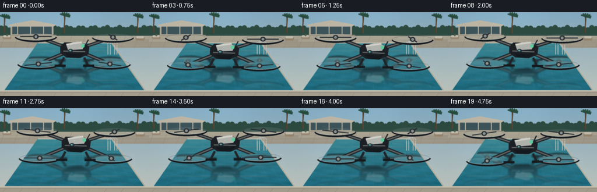
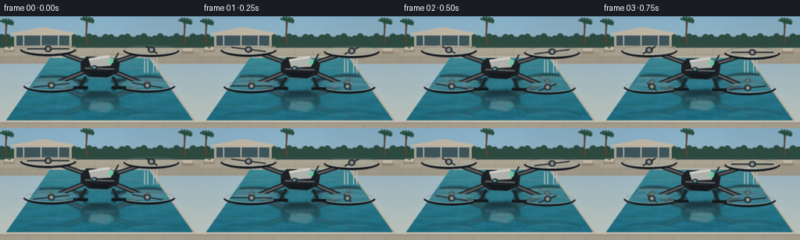
展开代码变化
--- 上一保存版本
+++ 本次保存版本
@@ -302,7 +302,7 @@
drone_layer = Image.new("RGBA", (W, H), (0, 0, 0, 0))
draw_drone_art(drone_layer, cx, cy, bob, tilt, t)
- mirror_axis = 350
+ mirror_axis = 314
layer = drone_layer.transform(
(W, H),
Image.Transform.AFFINE,
@@ -329,6 +329,14 @@
ImageDraw.Draw(water_mask).polygon(pool_polygon(10), fill=255)
im.alpha_composite(Image.composite(distorted, Image.new("RGBA", (W, H)), water_mask))
+ # A faint, disturbed horizon line ties the mirrored aircraft to the surface.
+ surface = Image.new("RGBA", (W, H), (0, 0, 0, 0))
+ sd = ImageDraw.Draw(surface)
+ for offset, alpha in ((0, 55), (8, 35), (17, 18)):
+ wave_y = mirror_axis + offset + math.sin(t * 2.0 + offset) * 2
+ sd.arc((cx - 154, wave_y - 10, cx + 154, wave_y + 12), 184, 356, fill=(222, 247, 237, alpha), width=2)
+ im.alpha_composite(Image.composite(surface, Image.new("RGBA", (W, H)), water_mask))
+
def draw_foreground(im, draw):
# Near coping catches the warm sky and frames the water.
@@ -359,7 +367,7 @@
bob = 3.3 * math.sin(t * 1.35 + 0.2) * SCALE
tilt = 0.018 * math.sin(t * 1.05)
cx = W / 2 + 2.5 * math.sin(t * 0.55) * SCALE
- cy = 252
+ cy = 214
draw_reflection(im, t, cx, cy, bob, tilt)
draw_drone(im, cx, cy, bob, tilt, t)
候选 06播放与检查图

候选 07播放与检查图
点击播放 · 原生 RGB 像素

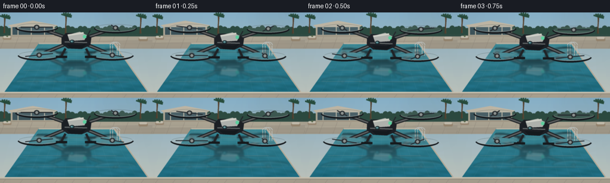
展开代码变化
--- 上一保存版本
+++ 本次保存版本
@@ -302,7 +302,7 @@
drone_layer = Image.new("RGBA", (W, H), (0, 0, 0, 0))
draw_drone_art(drone_layer, cx, cy, bob, tilt, t)
- mirror_axis = 314
+ mirror_axis = 286
layer = drone_layer.transform(
(W, H),
Image.Transform.AFFINE,
@@ -320,9 +320,9 @@
alpha = alpha[src_y, src_x]
fade = np.clip(1.0 - (yy - mirror_axis) / 235.0, 0.12, 1.0)
tint = np.array((54, 128, 138), dtype=np.float32)
- water_mix = np.clip((yy - mirror_axis) / 260.0, 0.18, 0.48)[:, :, None]
+ water_mix = np.clip((yy - mirror_axis) / 300.0, 0.16, 0.42)[:, :, None]
arr[:, :, :3] = (arr[:, :, :3].astype(np.float32) * (1.0 - water_mix) + tint * water_mix).astype(np.uint8)
- arr[:, :, 3] = np.clip(alpha * fade * 0.90, 0, 255).astype(np.uint8)
+ arr[:, :, 3] = np.clip(alpha * fade * 0.78, 0, 255).astype(np.uint8)
distorted = Image.fromarray(arr, "RGBA").filter(ImageFilter.GaussianBlur(1.3 * SCALE))
water_mask = Image.new("L", (W, H), 0)
@@ -367,7 +367,7 @@
bob = 3.3 * math.sin(t * 1.35 + 0.2) * SCALE
tilt = 0.018 * math.sin(t * 1.05)
cx = W / 2 + 2.5 * math.sin(t * 0.55) * SCALE
- cy = 214
+ cy = 184
draw_reflection(im, t, cx, cy, bob, tilt)
draw_drone(im, cx, cy, bob, tilt, t)
候选 08播放与检查图
点击播放 · 原生 RGB 像素
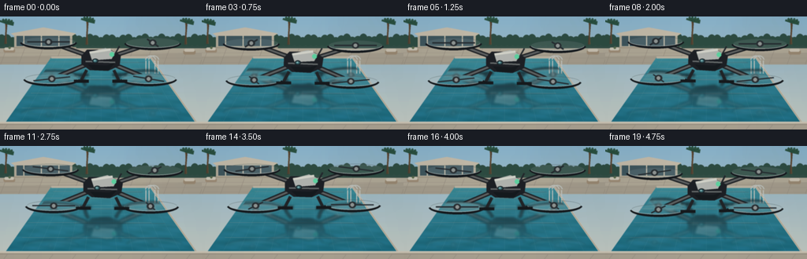
展开代码变化
--- 上一保存版本
+++ 本次保存版本
@@ -302,7 +302,7 @@
drone_layer = Image.new("RGBA", (W, H), (0, 0, 0, 0))
draw_drone_art(drone_layer, cx, cy, bob, tilt, t)
- mirror_axis = 286
+ mirror_axis = 314
layer = drone_layer.transform(
(W, H),
Image.Transform.AFFINE,
@@ -367,7 +367,7 @@
bob = 3.3 * math.sin(t * 1.35 + 0.2) * SCALE
tilt = 0.018 * math.sin(t * 1.05)
cx = W / 2 + 2.5 * math.sin(t * 0.55) * SCALE
- cy = 184
+ cy = 214
draw_reflection(im, t, cx, cy, bob, tilt)
draw_drone(im, cx, cy, bob, tilt, t)
可观测工具轨迹
实际执行的命令与返回图片。
命令 1exit 0
/bin/bash -c "pwd && rg --files -g 'prompt.txt' -g 'GENERATION_RULES.md' -g 'task_spec.json' -g '"'!node_modules'"'"
命令 2exit 0
/bin/bash -c "find . -maxdepth 2 -type f -printf '%p\\n' | sort | head -200"
命令 3exit 0
/bin/bash -c 'cat prompt.txt'
命令 4exit 0
/bin/bash -c 'cat GENERATION_RULES.md'
命令 5exit 0
/bin/bash -c 'cat task_spec.json'
命令 6exit 0
/bin/bash -c "sed -n '1,240p' artifact_io.py"
命令 7exit 0
/bin/bash -c 'python generate.py'
命令 8exit 0
/bin/bash -c 'python generate.py'
命令 9exit 0
/bin/bash -c "nl -ba generate.py | sed -n '205,350p'"
命令 10exit 0
/bin/bash -c 'python generate.py'
命令 11exit 0
/bin/bash -c 'python generate.py'
命令 12exit 0
/bin/bash -c 'python generate.py'
命令 13exit 0
/bin/bash -c 'python generate.py'
命令 14exit 0
/bin/bash -c "find . -maxdepth 2 -type f -printf '%p %s bytes\\n' | sort | sed -n '1,120p'"
命令 15exit 0
/bin/bash -c "python - <<'PY'
import json
from pathlib import Path
import numpy as np
from PIL import Image
spec = json.loads(Path('task_spec.json').read_text())
frames = sorted(Path('frames').glob('*.png'))
arrs = [np.asarray(Image.open(p).convert('RGB')) for p in frames]
arr = np.stack(arrs)
print('spec', spec)
print('frames', len(frames), 'shape', arr.shape, 'dtype', arr.dtype)
print('range', int(arr.min()), int(arr.max()), 'mean', round(float(arr.mean()), 2))
print('first/last mean abs delta', round(float(np.abs(arr[0].astype(int)-arr[-1].astype(int)).mean()), 3))
print('all unique frame hashes', len({p.read_bytes() for p in frames}))
print('artifacts', [name for name in ('pixels.npz','index.html','inspection.png','transition_check.png') if Path(name).exists()])
PY"命令 16exit 0
/bin/bash -c 'python -m py_compile generate.py && sha256sum generate.py pixels.npz index.html inspection.png'
视觉工具实际返回图片 1
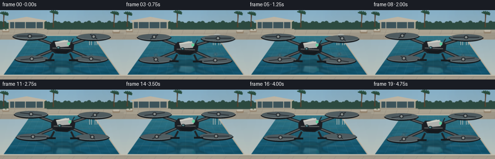
视觉工具实际返回图片 2
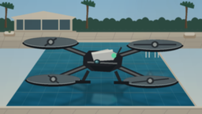
视觉工具实际返回图片 3
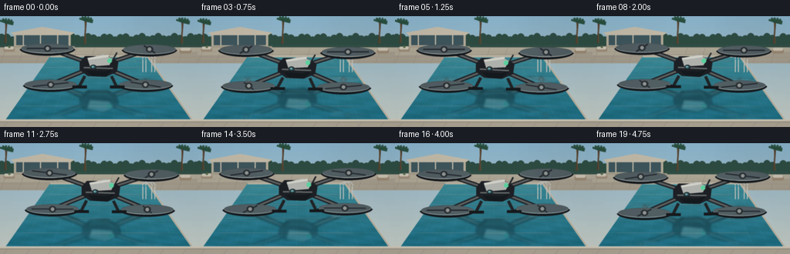
视觉工具实际返回图片 4
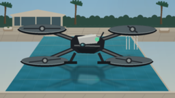
视觉工具实际返回图片 5

视觉工具实际返回图片 6
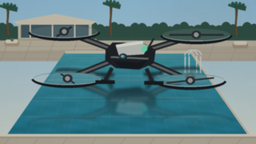
视觉工具实际返回图片 7
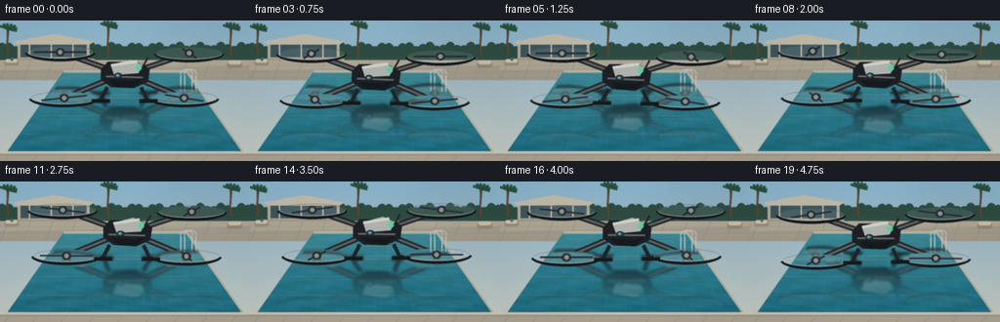
视觉工具实际返回图片 8
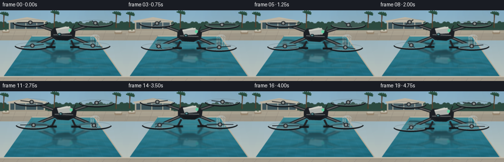
视觉工具实际返回图片 9
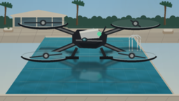
视觉工具实际返回图片 10
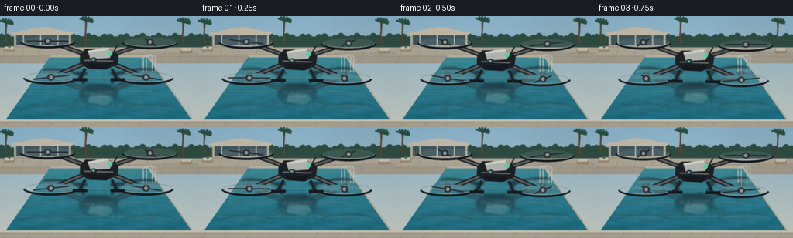
保存候选 8 份；完成命令 16 次；可验证图片返回 10 张。原始 API 响应与完整日志保留在本地。